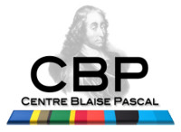

Séminaires/Colloquium 2014¶
Towards population studies in embryogenesis: a cell-to-cell mapping method for ascidian embryos¶
{kind=link}
COLLOQUIUM Centre Blaise Pascal-Laboratoires Joliot-Curie
6 novembre 2014 de 11h à 12h - Grande salle du CBP (LR6 C 023), ENS Lyon, France
Grégoire MALANDAIN, Senior research scientist at INRIA Sophia Antipolis, France
Organisateurs :
Annamaria Kiss (Laboratoires Joliot-Curie, ENS de Lyon, France)
Cerasela Calugaru (Centre Blaise Pascal, ENS de Lyon, France)
(32 participants)
Nowadays, microscopy techniques allow to image temporal 3D stacks of developing organs or embryos at the cellular level and with an acquisition frequency that enables to retrieve the cell lineages. Imaging a number of organs or embryos with several conditions may help to decipher the various components that drive the development, however this requires to distinguish between the inter-individual variability and the components” effects, enforcing the need for the comparison between individuals.
We will present a method that allows first to segment the cells from microscopy images, second to extract the symmetry plane of embryos at early stages, and third to retrieve a cell-to-cell mapping between two embryos.
De la gestion de clusters à l’examen in silico des processeurs : la polyvalence de Python¶
{kind=link}
Emmanuel QUEMENER, Centre Blaise Pascal, ENS Lyon, France
25 octobre 2014 de 11:20 à 11:40 - Université Lyon 1, Villeurbanne, France
« Python est à l’informatique scientifique ce que les mathématiques sont à la physique » : provocateur comme comparaison, mais nous le montrerons dans deux exemples issus du calcul scientifique : Python comme langage transformant des noeuds en architecture de stockage distribué, Python comme outil d’investigation pour explorer les limites des matériels d’aujourd’hui, notamment les GPU faces au CPU. \ Présentation Programme
Pushing the Frontiers of Ab Initio Kinetic Simulations in Heterogeneous Catalysis¶
COLLOQUIUM Centre Blaise Pascal-Laboratoire de Chimie
24 octobre 2014 de 14h à 15h - Grande salle du CBP (LR6 C 023), ENS Lyon, France
Michail STAMATAKIS, Department of Chemical Engineering, University College London, Torrington Place, WC1E 7JE, UK \
Organisateurs :
Tangui Le Bahers (Laboratoire de Chimie, ENS de Lyon, France)
Cerasela Calugaru (Centre Blaise Pascal, ENS de Lyon, France)
(17 participants)
The importance of heterogeneous catalysis in modern applications that enhance the quality of life cannot be overstated: current estimates place the value of the catalyst market at more than $20 billion, and it has been estimated that every $1 spent on a catalyst can generate up to $1000 worth of product. Computational methods are increasingly becoming crucial in gaining a fundamental understanding of the physicochemical phenomena resulting in catalytic activity. Such an understanding makes it possible to design improved catalysts; however, the complexity encountered in catalytic systems poses several challenges in modelling them. We present an ab-initio kinetic Monte Carlo (KMC) framework that uses concepts from graph theory1 to overcome these challenges and easily treat complex chemistries and surface phenomena. This approach allows one to define elementary reaction events characterized by complex neighbouring patterns of the sites involved. These sites can be of various types (such as steps or terraces) and occupied by monodentate as well as multidentate species. It also treats adsorbate-adsorbate lateral interactions in a generalised way by incorporating cluster expansions for the energetics.2 We further showcase this approach by applying it to key catalytic reactions, in particular CO oxidation on Pd surfaces3 and Au nano-clusters,4,5 which is important for environmental and health reasons, and water-gas shift on single crystal Pt surfaces,6 which is relevant to H2 production from biomass. We show that our approach can provide a wealth of information, which can be used to explain experimental observations and obtain insight in the design of materials with desired catalytic properties.\
References
M. Stamatakis and D. G. Vlachos, Journal of Chemical Physics, 2011, 134, 214115.\
J. Nielsen, M. d’Avezac, J. Hetherington and M. Stamatakis, Journal of Chemical Physics, 2013, 139, 224706.\
S. Piccinin and M. Stamatakis, ACS Catalysis, 2014, 4, 2143.\
M. Stamatakis, M. Christiansen, D. G. Vlachos and G. Mpourmpakis, Nano Letters, 2012, 12, 3621.\
N. Nikbin, N. Austin, D. G. Vlachos, M. Stamatakis and G. Mpourmpakis, Submitted, 2014.\
M. Stamatakis, Y. Chen and D. G. Vlachos, Journal of Physical Chemistry C, 2011, 115, 24750
Séminaire SIDUS : un « couteau suisse » pour l’expérimentation numérique (en reproductibilité) ?¶
{kind=link}
Emmanuel QUEMENER, Centre Blaise Pascal, ENS de Lyon
3 octobre 2014 à 10h - amphi du CRMN - ISA
Le Centre Blaise Pascal est LA « maison de la modélisation » lyonnaise. Trait d’union entre la recherche et la technologie, le CBP explore entre autres, au travers des projets des numériciens, les nouvelles tendances en matière de calcul scientifique : la mise à disposition de plateaux techniques (multi-noeuds, multi-coeurs, GPU, architectures exotiques, visualisation 3D) et ces explorations exigent le développement d’outils permettant de simplifier les tâches de son seul administrateur système. SIDUS (pour Single Instance Distributing Universal System) est un de ces outils !
Fonctionnelle depuis presque 4 années au CBP, cette approche SIDUS sert de socle en imposant instantanément une unicité de l’OS sur tout un parc de machines à étudier, de manière indépendante ou collaborative : elle a ainsi largement contribué au choix de GlusterFS comme choix de système de fichiers distribué temporaires, à comprendre la variabilité qui affectait nombre de simulations sur des matériels récents ou anciens.
Emmanuel Quéméner détaillera dans son exposé les ressources du Centre Blaise Pascal, leur accès aux équipes de recherches, SIDUS qu’il a développé et contribué à intégrer au Pôle Scientifique de Modélisation Numérique (PSMN), mésocentre de calcul (et à l’Institut de Génomique Fonctionnelle de Lyon, IGFL) ainsi que les sources de variabilités dans les équipements informatiques qu’il a découvertes grâce à SIDUS ces dernières années au travers de plusieurs projets sur le stockage ou les architectures hybrides.
Renseignements à jean-marc.lancelin @ isa-lyon.fr
Order from Chaos - The Solar Cycle¶
COLLOQUIUM Centre Blaise Pascal-Laboratoire de Physique
23 juin 2014 de 11h à 12h - Grande salle du CBP (LR6 C 023), ENS Lyon, France
Steven TOBIAS, Department of Applied Mathematics, University of Leeds, Woodhouse Lane, Leeds, LS2 9JT, UK
Organisateurs :
Antoine Venaille (Laboratoire de Physique, ENS de Lyon, France)
Cerasela Calugaru (Centre Blaise Pascal, ENS de Lyon, France)
(42 participants)
In this talk I will discuss the observations of and the mechanisms responsible for the generation of magnetic field in our nearest star, the Sun. The systematic eleven year solar cycle is generated by the interaction of turbulence with rotation and magnetic fields. Though a mechanism describing the generation was presented by E.N. Parker over 50 years ago, it is only within the last couple of years that this has been made to work in the astrophysically relevant limit of high magnetic Reynolds number. I shall conclude by speculating on whether statistical approaches may prove useful in describing the systematic evolution of the solar cycle.
Differentiation control in the Shoot Apical Meristem, an inside out model¶
COLLOQUIUM Centre Blaise Pascal-Laboratoires Joliot-Curie
28 mai 2014 de 11h à 12h - Grande salle du CBP (LR6 C 023), ENS Lyon, France
Jérémy GRUEL, Sainsbury Laboratory Cambridge University
Organisateurs :
Annamaria Kiss (Laboratoires Joliot-Curie, ENS de Lyon, France)
Cerasela Calugaru (Centre Blaise Pascal, ENS de Lyon, France)
(30 participants)
The Shoot Apical Meristem (SAM) is a dome structure of a few thousand cells at the origin of all above ground plant organs. In the SAM, plant hormones, such as cytokinin, control a complex gene expression network tightly regulating the amount of stem cells as well as the differentiation of their descendants.
Even though the interactions between the various gene expression domains are getting better understood, they are not sufficient to maintain them correctly positioned in a three dimensional tissue. As of today, models have had to rely on hypothetical positional cues to help gene expression to the correct locations. Based on recent evidence, we show that a single positional cue, the external cell layer of the SAM, is enough to pattern the ensemble of the SAM domains.
The proposed model, in which tissue shape controls gene expression, is robust to cell division, growth and tissue deformation. It also offers a possible explanation to the emergence of new stem cell niches in growing primordia.
Turbulence in Galaxy Clusters: Statistical Properties and Physical Implications¶
COLLOQUIUM Centre Blaise Pascal-Centre de Recherche Astrophysique de Lyon
15 april 2014 de 14h à 15h - Grande salle du CBP (LR6 C 023), ENS Lyon, France
Francesco MINIATI, Institute for Astronomy, ETH Zurich
Organisateurs :
Rolf Walder (Centre de Recherche Astrophysique de Lyon, ENS de Lyon, France)
Cerasela Calugaru (Centre Blaise Pascal, ENS de Lyon, France)
(18 participants)
Galaxy clusters (GC) are the largest virialized structures in the universe. While most of their mass is dark (matter), most of the visible (baryonic) matter is in the intra-cluster-medium (ICM), a hot, thin plasma. GC form hierarchically, i.e., small structures form first and then merge to form larger ones. The most massive objects are thus dynamically young, characterised in particular by unsettled dark matter substructures and strong ICM fluid motions.
In this talk I will present the first study of the statistical properties of turbulence in the ICM. For this purpose, I have employed a novel numerical technique based on an « Eulerian » refinement strategy, in which the GC volume is refined with progressively finer uniform nested grids (in a Matryoshka-like fashion) during its gravitational collapse. The statistical properties of the turbulence, including longitudinal and transverse structure functions of the solenoidal and compressional components of the velocity, as well as probability density functions of velocity derived and other thermodynamic quantities, are computed during the cluster merger history. Amongst others, this allows us to quantify for the first time the acceleration rate associated to stochastic processes (based on second order Fermi mechanism) as well as the effective lifetime of such processes. I will discuss this and other physical implications for turbulence based processes (e.g., amplification of magnetic fields) within the context of observational constraints.
Mouvement à long terme dans le Système Solaire¶
COLLOQUIUM Centre Blaise Pascal-Laboratoire de Physique
24 mars 2014 de 11h à 12h - Grande salle du CBP (LR6 C 023), ENS Lyon, France
Jacques LASKAR, Observatoire de Paris
Organisateurs :
Antoine Venaille (Laboratoire de Physique, ENS de Lyon, France)
Cerasela Calugaru (Centre Blaise Pascal, ENS de Lyon, France)
(48 participants)
Les intégrations à long terme du mouvement des planètes du système solaire ont été un défi des dernières décennies. Les progrès dans ce domaine ont suivi l’évolution du perfectionnement des ordinateurs, mais aussi l’amélioration des algorithmes d’intégration numérique, qui ont abouti au développent d’intégrateurs symplectiques d’ordre élevé qui ont une bonne stabilité à long terme. En même temps, la parallélisation des algorithmes a aussi permis une réduction des temps de calculs. L’intégration numérique des équations est seulement une partie du travail, car il faut aussi déterminer avec précision les conditions initiales et paramètres du modèle par comparaisons aux observations existantes. Une fois que toutes ces étapes sont satisfaites, la principale limitation dans l’obtention d’une solution précise pour le mouvement des planètes réside dans la nature chaotique du système qui limite la validité des solutions à environ 60 millions d’années.
The behavior of iron and iron-bearing minerals in the Earth¶
COLLOQUIUM Centre Blaise Pascal-Laboratoire de Géologie de Lyon
10 février 2014 de 14h à 15h - Grande salle du CBP (LR6 C 023), ENS Lyon, France
Ronald E. COHEN, Carnegie Insitution of Washington at University College London
Organisateurs :
Razvan Caracas (Laboratoire de Géologie de Lyon, ENS de Lyon, France)
Cerasela Calugaru (Centre Blaise Pascal, ENS de Lyon, France)
(22 participants)
Ron is a mineral physicists doing first-principles calculations based on density-functional theory and beyond (Dynamical mean field theory and Quantum Monte Carlo). He has extensively studied iron-bearing high-pressure phases, like FeO, (Mg,Fe)SiO3 perovskite and post-perovskite, and Fe-based alloys, under extreme pressures and temperatures. He produced data on elasticity and seismic properties, thermodynamics, and electrical conductivity. His recent work deals with metal-insulator transitions in FeO, the correct description of the magnetic transitions and the phase diagram of FeO, and the electrical conductivity of iron at Earth’s core conditions. He is a Fellow of the American Physical Society, American Geophysical Union, and the Mineralogical Society of America, and receiver of the Dana medal of MSA in 2009. He was recently awarded an advanced ERC grant based at University College London to work on high-pressure mineral physics.
Using Density Functional Theory to model photophysical properties of molecular compounds: some insights¶
COLLOQUIUM Centre Blaise Pascal-Laboratoire de Chimie
31 janvier 2014 de 14h à 15h - Grande salle du CBP (LR6 C 023), ENS Lyon, France
Ilaria CIOFINI, Laboratoire d’Electrochimie, Chimie ParisTech,
Organisateurs :
Tangui Le Bahers (Laboratoire de Chimie, ENS de Lyon, France)
Cerasela Calugaru (Centre Blaise Pascal, ENS de Lyon, France)
(28 participants)
The performances of Density Functional Theory (DFT) and Time Dependent DFT (TD-DFT) in the prediction of ground and excited state properties of molecular systems (both fully organic or containing d or f transition metals) will be reviewed by selected examples of compounds used in molecular devices with application ranging from hybrid photovoltaic cells to molecular spintronic. Special emphasis will be devoted to the possibility of providing a realistic description of the environmental effects (ex. solvent, absorption on a surface, encapsulation) on the overall photophysical properties of these systems by the means of theoretical methods ranging from continuum polarisable models for solvent, cluster approaches, QM/QM’ or periodic calculations. Finally, a recently proposed index enabling to quantify the extent and magnitude of transferred charge associated to a charge transfer (CT) excitation, will be illustrated and applied to the description of CT excitations in push-pull donor-acceptor systems providing insights on its potential application for the designing and development of novel molecular materials.